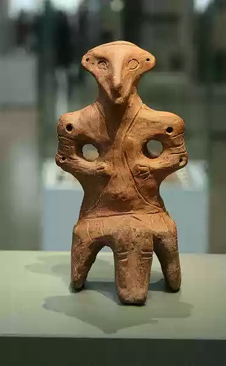

SRBIJA
Arheološki lokalitet Vinča, nalazi se u istoimenom selu, na desnoj obali Dunava, kraj ušća reke Bolečice, na 14 km jugoistočno od Beograda prema
Smederevu. Praistorijsko naselje ima izgled niskog brežuljka. Na istočnoj strani presekao ga je Dunav i otkrio kulturni sloj, debljine 10,5 m, gde
su u gotovo pravilnom nizu ređa devet građevinskih horizonata, odnosno slojevi sa ostacima nekoliko naselja iz različitih perioda.

Vinča je naseljena u vreme starijeg neolita, oko 5500-5000 godina pre naše ere. Stanovnici su živeli u poluukopanim kolibama šatorastog izgleda
(naselja prvog horizonta), a proizvodili su posuđe od malo pečene zemlje, kameno oruđe i oružje. U ostalih osam horizonata građene su ušorene prostrane
kuće kvadratnog oblika, od drveta i blata. U zaleđu naselja bili su izuzetno povoljni uslovi za gajenje stoke i zemljoradnju. U to vreme (4500 do 3500
godina pre naše ere, mlađi neolit) Vinča je postala veliki privredni, kulturni i verski centar, koji je presudno uticao na kulturu svih zemljoradničkih
zajednica srednje i jugoistočne Evrope.
Na oko 4,5 m u kulturnom sloju Vinče zapažaju se ostaci kuća srušenih u požaru i predmeti koji otkrivaju da je Vinča posle pronalaska bakra izgubila
značaj. U Vinči je bilo malo naselje sve do početka istorijskog perioda, ali na manjem prostoru. Na tom području otkriveni su tragovi starosrpskog
groblja iz 10. do 13. veka.
Od arheološkog materijala karakteritični su nalazi oruđa i oružja od kamena, roga i kosti, posuđa, raskošnih vaza, nakita od fosilnih školjki, a
posebnu vrednost čini bogata i raznovrsna plastika valjkastih i pljosnatih statua. Na osnovu tih predmeta može se rekonstruisati ne samo život u
praistorijskoj Vinči, nego i rana kulturna istorija Podunavlja.